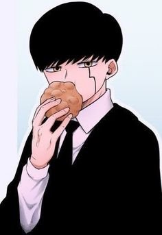
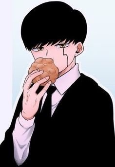

Letras
[Intro]
Yeah, chico
[Verso 1]
Chiito, talentoso, arawaza, deseado
Prohibido, prohibir, claramente ilimitado
Desventaja, dimensión, no es de este mundo
Demasiado, no lo estás escuchando
Ey, acumulando rumores sobre los rivales
Wow, acumulando rumores sobre los rivales
En el bolsillo, desviado, ¡no lo aceptaremos de ninguna manera!
¿En serio? ¿Vas a seguir así?
¿Todo esto en serio?
[Estribillo]
Es en serio, es en serio, sí-sí-sí-sí
Bling-bang-bang, bling-bang-bang-born
Bling-bang-bang, bling-bang-bang-born
[Verso 2]
Antes de demostrar tus habilidades
Vivirás más intensamente que tu oponente
El corazón palpitante se siente muy feliz
Claramente el mejor, el número uno
Siempre insatisfecho, todos los días están locos (Bling, bling, bling)
No necesitas siete luces, más que tu hielo, más helado (Helado)
Yo, todo lo que hago es sorprendente, pero muy feliz
Ah, estás alucinando, todos a tu alrededor
Familia y amigos riendo (Felices)
Ya no tenemos prohibiciones, todos pueden rendirse ante mí (Bang-bang-bang)
Sin libros de texto, sin problemas de exámenes
Un malvado encantamiento muy malo, escucha
[Pre-Coro]
Espejo, espejo, responde
¿Quién es el mejor? ¡Yo soy el mejor! Oh sí
Hasta donde pueda ir sin preocupaciones
Hacia el próximo, hacia el número uno
[Estribillo]
Ahora cantando
Bling-bang-bang, bling-bang-bang, bling-bang-bang-born
(Ahora cantando)
Bling-bang-bang, bling-bang-bang, bling-bang-bang-born
(Ahora cantando)
Bling-bang-bang, bling-bang-bang, bling-bang-bang-born
Hacia el próximo, hacia el número uno
[Refrán]
Eyday, solo siendo yo mismo es una gran flexión
Eyday, nadie puede cerrarme la boca (Don't test)
Eyday, solo siendo yo mismo es una gran flexión
Eyday, nadie puede hacerme callar (Don't test)
[Verse 3]
Sí, sí, sí
Sin experiencia ni amplia formación, brillando
Esta existencia es un raro caldo de cultivo, brillando
Los aristócratas regresan sin licencia, el amante verde, verde
Una sola vez sacudiendo todo el país
Este bache es brillante
Si hay balas, está lleno
El poder de la palabra "Namari Namami" en Kansai
Música, suerte, diosa de la victoria, también esta noche, todos de golpe
Compitiendo como en un manga, luchando fácilmente
El poder abrumador viene de esta cabeza y esta boca
Este cuerpo no tiene tatuajes
Esta cara no tiene heridas
Una arruga talla un año duro
Bling-bang-bang, bling-bang-bang, bling-bang-bang-born
Brillando como soy, golpeando, para golpear
Nací en Japón para ser brillante, ¡ay!
[Pre-Coro]
Espejo, espejo, responde
¿Quién es el mejor? ¡Yo soy el mejor! Oh sí
Hasta donde pueda ir sin preocupaciones
Hacia el próximo, hacia el número uno
[Estribillo]
Ahora cantando
Bling-bang-bang, bling-bang-bang, bling-bang-bang-born
(Ahora cantando)
Bling-bang-bang, bling-bang-bang, bling-bang-bang-born
(Ahora cantando)
Bling-bang-bang, bling-bang-bang, bling-bang-bang-born
Hacia el próximo, hacia el número uno
[Refrán]
Eyday, solo siendo yo mismo es una gran flexión
Eyday, nadie puede cerrarme la boca (Don't test)
Eyday, solo siendo yo mismo es una gran flexión
Eyday, nadie puede hacerme callar (Don't test)


 
